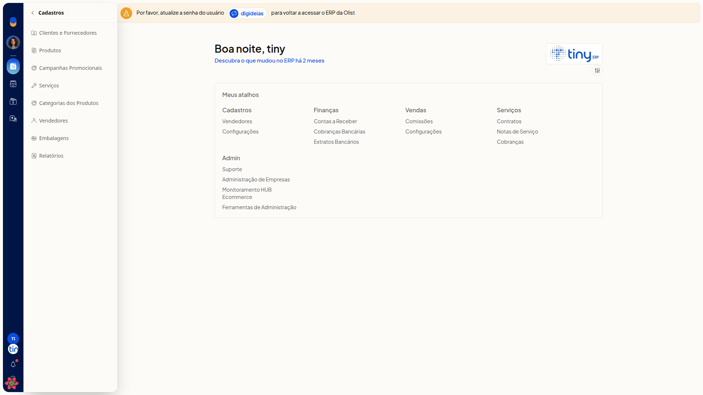
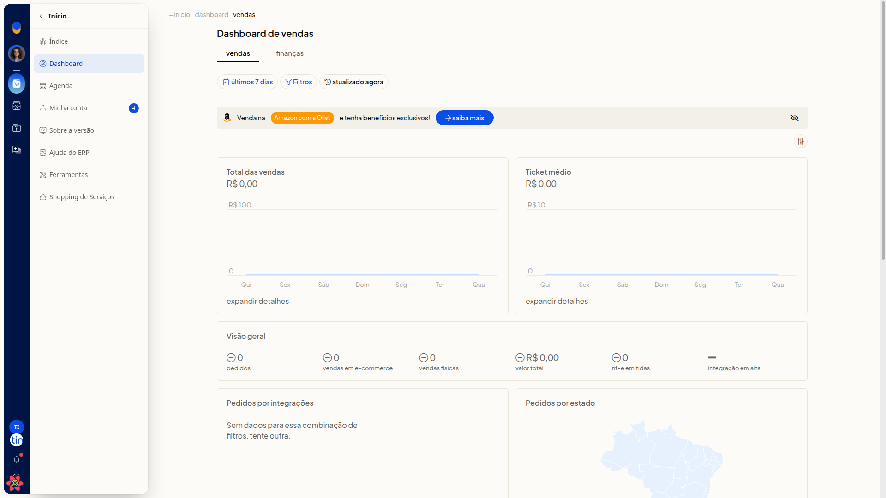

Encontrar o gerenciador de preços e a calculadora de preços do Hub
Pré-requisitos
- A tela só abre para empresas com anúncios liberados.
Importante
- Na barra de produtos à esquerda aparecem Olist, Lis, ERP, PDV e Conta Digital. O Hub não aparece: ele está entre os produtos ocultos, e o atalho não abre o Hub.
Instruções
-
No menu superior do ERP, clique em Cadastros.
-
Confira a lista do submenu. Os itens são Clientes e Fornecedores, Produtos, Campanhas Promocionais, Serviços, Categorias dos Produtos, Vendedores, Embalagens e Relatórios. Não há Anúncios nem Gerenciador de preços.

-
No menu superior, clique em Vendas.
-
Confira a lista do submenu. Não há Anúncios, Gerenciador de preços nem item de calculadora. Pedidos de Venda aparece entre os itens de vendas.
-
Acesse Início > Dashboard.
-
Confira o Dashboard de vendas. O único banner com texto é o promocional da Amazon. Não há texto de descontinuação nem menção a Pedidos Hub, Dashboard Hub, Anúncios, Gerenciador de preços, calculadora ou Mercado Livre.

Resultado
O submenu Cadastros não oferece Anúncios nem Gerenciador de preços. A calculadora de preços não é alcançada por Cadastros, por Vendas nem pelo Dashboard de vendas.